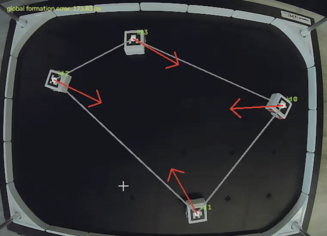
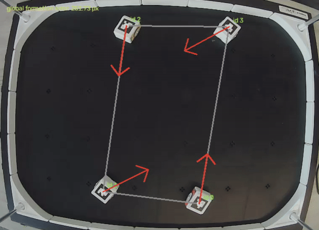
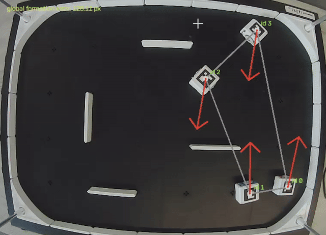
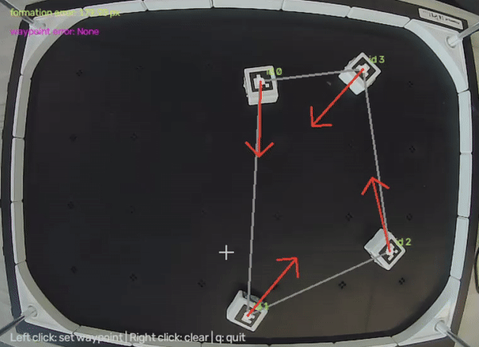

Multi-Robot Rendezvous and Flocking Tutorials
Robotics Tutorials · Multi-Robot Coordination
These tutorials demonstrate how camera-based tracking and feedback control can be used to coordinate physical robots. The goal is to make multi-robot coordination concepts more accessible through practical implementations and demonstrations.
From tracking to coordination
An overhead camera tracks ArUco markers attached to each robot to estimate their positions and orientations. These measurements allow a centralized controller to calculate how the robots should move relative to one another. The resulting control commands are translated into wheel velocities, enabling the robots to adjust their motion as their positions change.
Rendezvous and formation
The rendezvous demonstration shows how robots can move from arbitrary starting positions into a desired formation using relative-position feedback. The fixed-slot example extends this approach by assigning each robot a specific position within the formation.
Our vision-based formation control tutorial explains the underlying methods and walks through their implementation on differential-drive robots. The accompanying GitHub repository provides the Python code and setup instructions for reproducing the demonstrations.
Rendezvous

Fixed slots

Flocking and obstacle handling
Beyond formation control, these demonstrations explore how robots can modify their movement in response to their surroundings. The obstacle example illustrates reactive motion adjustments, while the flocking example demonstrates coordinated movement with behavior switching.
A separate tutorial focused on flocking control and behavior switching is currently in development.
Obstacle demonstration

Flocking with switching
